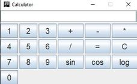
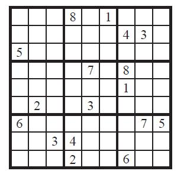

Here you will see some of the projects, both academic and individual, that I have done. You can download the code
yourself, or run the apps in-browser if supported. If you would like to see my Github
home page or other media, the links are at the top left of this section.
There is also a section on my personal life as a texan and computer science student.
I hope you enjoy.

This is a PHP web application that allows the user to randomly generate an array of any size, then sorts the array using various sorting algorithms to compare data on array movements, comparisons, real running time, and Big O time.
View Demo Video
View Code
Intermediate-level Java
Advanced Swing
Calculator

This is a slightly advanced calculator written in Java Swing supporting arithmetic, some calculus, and some other basic functions you would find in a Windows 10 calculator.
MIPS Assembly
Tic Tac Toe
game

Every programmer should know how basic machine code works, or at least that's what they told me in school. This MIPS program will allow you to play a one-on-one game of tic-tac-toe using nothing but assembly.
Easy-Level C++
Sudoku
solver

Come across a solved sudoku puzzle that doesn't look correct, but you aren't sure? Try using my sudoku solver. This is a simple C++ program that verifies sudoku puzzles using nine 3x3 grids with multi-dimensional array comparison.
Personal Life
I recently turned
21 years old
Since this isn't even a picture of just me (I'm on the right) it should be obvious that I'm not a fan of taking pictures of myself. However, I am a fan of talking about myself. I have currently not updated this section, but there is more to come, I promise.